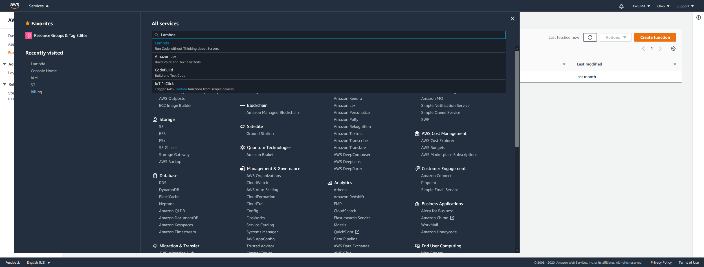
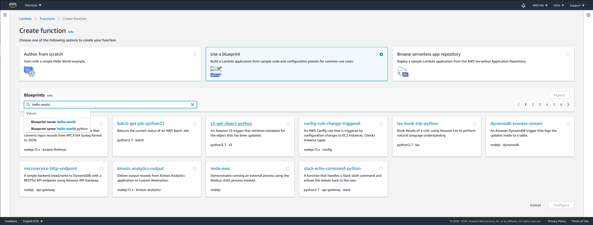
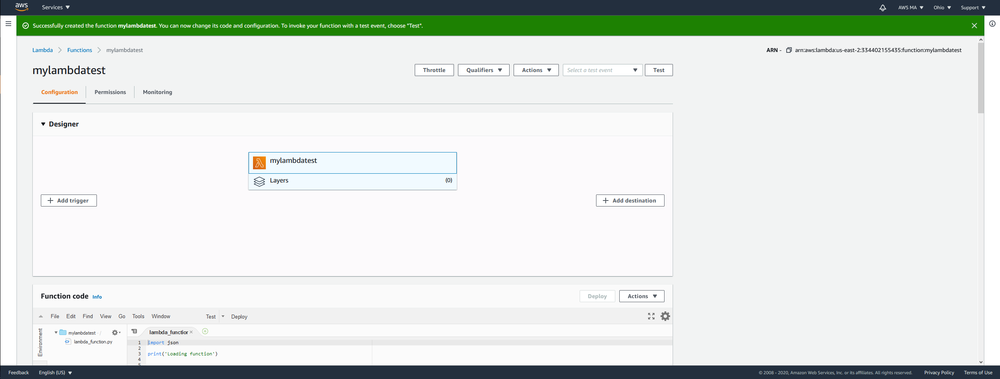
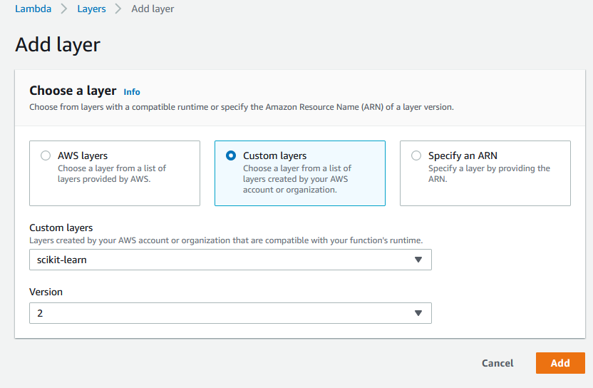
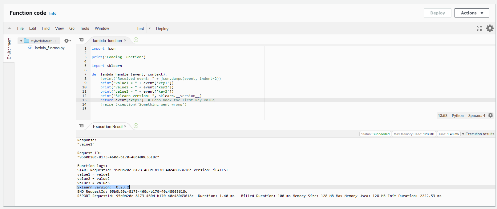
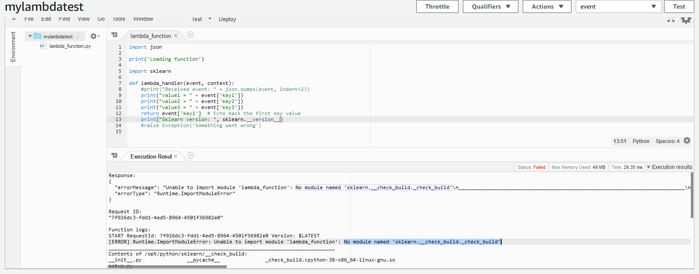

How to Create an AWS Lambda Layer For Any Python Dependency
Michael Aydinbas, Mon 05 October 2020, Tools
Michael Aydinbas, Mon 05 October 2020, Tools
This article continues where How to Run External Python Libraries in AWS Cloud ended.
In this article you will learn about creating your own AWS Lambda Layer to support any Python package you may need. In particular, we wanted to support the well-known machine learning library scikit-learn. So I started a journey into the depth of AWS Lambda Layers. Once you understood the main steps, you are able to setup your own layers in no time.
Table of Contents
In general, the idea is to setup a system that is identical or close to the system AWS Lambda Layers are based on, then install the dependencies with pip like in any other Python project, and finally ship these dependencies as a Lambda layer. Easy, isn't it? In the following, I am going to explain each of these steps.
As mentioned in the first article, for mirroring the Lambda environment, the best available option is docker-lambda, which replicates the AWS Lambda environment almost identically.
First, we create a new folder, for example scikit-learn-layer, and create a requirements.txt in which we put all the dependencies that we want later to be part of the Lambda layer. In our case, this is scikit-learn, so this is the only line in our requirements.txt file.
Of course, feel free to add any specific version or constraint that suits your case.
Next, we run docker and mount our current working directory, assuming, you already have a working docker installation:
$ docker run --rm -v $(pwd):/foo -w /foo lambci/lambda:build-python3.8 \
pip install -r requirements.txt -t python
$(pwd)is a bash expression that allows to use the current working directory (that is whatpwdreturns) as a variable for another command (here the-voption of docker). This command is not available for Windows (but of course, again, in WSL). For the windows command line or the Anaconda Prompt you can use%CD%, for the Windows PowerShell it is${PWD}. And of course, the most simple solution does also work: Just use an absolute path like C:/Users/user/scikit-learn-layer.
docker run will execute the given command pip install in a container that is based on the given image lambci/lambda. As always with docker, the first time you run this command, the image has first to be downloaded from DockerHub. The lambci/lambda image offers various Python builds. For our platform, we use Python 3.8, but there is support for all major Python versions, so you can easily change the version to your needs.
After docker has pulled the image, it will run the command pip install -r requirements.txt -t python, which will install all dependencies listed in the file requirements.txt to the target directory specified by the -t option. All this happens inside a directory called foo, which is just a working directory we use inside the container so that we do not mess with other things. While this is happening inside the container, because the container works in a directory that is mounted, the output will also be available in the host system. The reason for choosing python as output directory is due to the requirements by the AWS platform to put Python dependencies into either a python directory or into python/lib/python<3.x>/site-packages.
When the docker process has finished, you should have the scikit-learn package along with all dependencies within the newly created python folder.
Next, we zip this folder: zip -r scikit-learn.zip python. Windows users should have a command for zipping available in their context menu.
Now things get interesting. The next step would be to create or publish a new AWS Lambda layer based on our zipped dependencies. The easiest way to do this is to use the AWS CLI tool, so go over there and grab your version.
When you have installed the AWS cli tool, run aws configure once to set your credentials and your default region. You find your credentials under My Security Credentials -> Access Keys inside the AWS Management Console. You may need to create a new Access Key.
We need to use the publish-layer-version command. This command supports the creation of Lambda layers either from zip files or from S3 buckets. In general, S3 is favored over zip files and will be faster, especially for larger files. As the zipped version of scikit-learn has a total file size greater than 50 MB, we will use S3 for deploying the layer. If your zip file is small enough, you can replace the --content option with --zip-file.
Therefore, we head over to our AWS Management Console and create a new S3 bucket for our Lambda layer. Alternatively, you can use the AWS cli tool's create-bucket command.
Most AWS services are region based and this holds true for Lambda functions, Lambda layers and S3 buckets. This means, you have to deploy these services in the same region, otherwise they cannot see each other!
With our newly created S3 bucket in the right region, we can finally copy our zip file over to S3 with the s3 cp command.
$ aws s3 cp scikit-learn.zip s3://<your-bucket-name> --region <your-target-region>
Once the process has finished, you can see your zip file in the S3 bucket. Time to create our Lambda layer!
$ aws lambda publish-layer-version \
--layer-name scikit-learn \
--description "Scikit-learn for Python 3.8" \
--compatible-runtimes python3.7 python3.8 \
--content S3Bucket=<your-bucket-name>,S3Key=scikit-learn.zip
As you can see, the command is straight forward and all information is available at this point.
If the command is successful, you are rewarded with a JSON response informing you about the layer's arn, which can be used in Lambda functions to connect the function to a Lambda layer.
And that's it! You have successfully created your first Lambda layer with a Python package that you can now use to import this package in your Lambda function.
You can connect your layer to any of your functions via the web interface, or again, via the AWS cli's update-function-configuration command:
$ aws lambda update-function-configuration \
--function-name <your-lambda-function> \
--layers <layer-arn:version-number> <layer-arn:version-number> <...>
This command again rewards you with a JSON response, which should have the key-value pair "LastUpdateStatus": "Successful".
If you don't have a Lambda function yet, no problem, you can create your first one within seconds. Just go over to the AWS Management Console, click on Services and choose Lambda as the Service.

In the following landing page you see all your Lambda functions for the currently selected region. Click on Create function to create a new Lambda function. Choose "Use a blueprint" and type "hello world" into the search field.

Choose the option "hello-world-python, A starter AWS Lambda function" and click Configure. Give your function a name, leave the rest as it is and click on Create function. This will create your Lambda function. You should see a green success message.

You can see your function in the middle of the screen along with the current connected layers, which are zero. Click on the Layers and on Add a layer. Next, choose Custom layers, from the dropdown choose your newly created Lambda layer from the previous step, and the version. Finish the assignment with a click on Add. That's it.

To test your scikit-learn dependency, you should now be able to execute
import sklearn
print(sklearn.__version__)
within your Lambda function. If this is your first function, then clicking on Test will open another dialog asking you to configure the test. Just enter an event name, leave the rest and click on Create. Events and tests are supposed to provide your function with specific input that you can test, but we are only interested in whether the function can successfully import sklearn. So click on Deploy and afterwards on Test and you should see something similar to the following screen.

If this is not the case and you got something like this

this could mean that the Python runtime of your AWS Lambda function is configured with the wrong version. Scroll down to the Basic settings section and verify your runtime version.

You can switch between different versions by clicking on Edit and choose the runtime you seek from the dropdown menu.
Finally, if you want to share your layer with others, you have to grant the right permissions via the add-layer-version-permission command. You can grant access for certain roles and users, or allow public access like in the following example:
aws lambda add-layer-version-permission \
--layer-name scikit-learn \
--principal "*" \
--action lambda:GetLayerVersion \
--version-number <your-layer-version> \
--statement-id public \
--region <your-target-region>
This concludes this article. Of course there is always more to learn, so if you want to go further and beyond this manual process, look into AWS SAM.
Don't hesitate to contact me via Slack, LinkedIn or GitHub if you have any questions, comments or suggestions.
Too Long; Dint't Read? I've got you covered!
To create your own AWS Lambda layer with any Python package that is needed as a dependency by a AWS Lambda function, follow these steps (the exact commands are given in the article):
pip install and to download all required dependencies into a folder named python. Important Choose the correct Python version for the lambci/lambda build.Keep Calm and Code in Python!
-- Michael